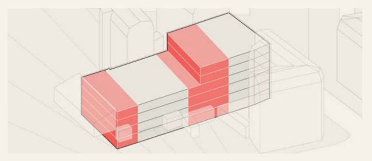
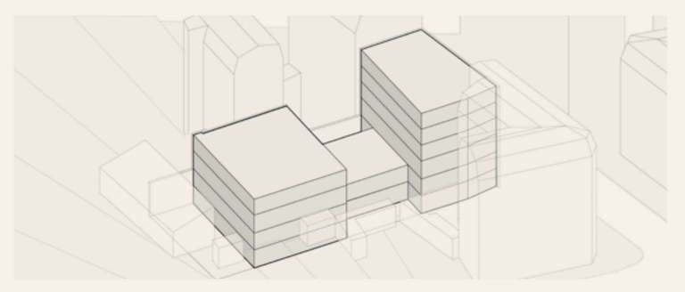
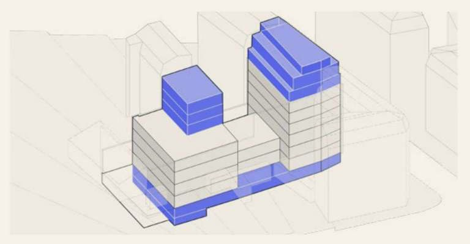

Bolivar | Studio BELEM | Paris 19th
- 3D modeling and graphic production from a single model structured by phases (demolition, retention, new construction), ensuring consistency across all graphic documents of the planning permission submission.
- Mixed programme, hotel + student residence | heavy rehabilitation of a dense urban block, Paris 19th. Project launched in 2023, suspended, then resumed and carried through to the building permit submission in 2026.
- Scope of work including selective demolitions, rooftop extensions, green roofs, and complete restructuring of vertical circulation.
Bolivar
- Project type
- Rehabilitation / Student Residence
- Phase
- Planning Permission
- Year
- 2026 / Professional
- Location
- 32-34 Av. Simon Bolivar, Paris 19th
- Office
- Studio BELEM
- Surface
- 2 800 m²
Studio BELEM / Rehabilitation / Ongoing
Project
A mixed-use programme combining a boutique hotel and a student residence on a complex urban site adjacent to the Bolivar metro station. The project navigates a dual occupancy logic: the hotel seeks an urban and transient relationship with the city, while the student housing requires durability, community, and a domestic scale within the same envelope.
The building section resolves this tension vertically, with hotel rooms occupying the lower floors at street level and student accommodation arranged around a shared interior courtyard at the upper levels. The facade system is designed to read as a coherent architectural gesture while modulating its openings and materiality to signal the change in programme. The project involves significant coordination with structural engineers and the urban planning authority.
Drawings and images
Volumes
Fig. 1

